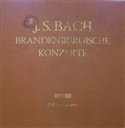

Bach: Brandenburg Concertos – analogue recordings on LP
On this page I discuss mainly the sound qualities of Brandenburg Concertos releases on LP. As usual on this site, I only present analogue stereo recordings; early mono recordings are omitted as well as the recent digital ones.
On this page, you will find:
- a complete list of releases on 3 LPs
- a complete list of recordings on period instruments
- a modest selection of other recordings
Fitting six concertos on LP
The cycle consists of six concertos, which would naturally fit on three LPs. Unfortunately, only two such releases exist. The cycle is usually squeezed onto two LPs, and this can be done in one of the two ways:
- The concertos are pressed in a different order, so that the shorter concertos share one side. Still, such side can run up to 30 minutes, depending on tempos.
- A long concerto (e.g. No. 5) is split between two sides. This is probably the better solution from the standpoint of sound quality.
Sets on 3 LPs (a complete list)
Karl Münchinger, Stuttgart Chamber Orchestra, 1959, Decca
 The
Skeptical Audiophile mentions this as one of the two recordings of the Brandenburg Concertos that they
“like for music and sound”.
The
Skeptical Audiophile mentions this as one of the two recordings of the Brandenburg Concertos that they
“like for music and sound”.
Albert Fuller, Aston Magna, 1977, Smithsonian Collection
 Recorded on period instruments.
Recorded on period instruments.
Interestingly, the concertos are fitted on five sides; the third LP is single-sided.
Sets on 2 LPs, played on period instruments (a complete list)
Nikolaus Harnoncourt, Concentus Musicus Wien, 1964, Telefunken
Collegium Aureum, 1967, Harmonia Mundi

Discogs.Gustav Leonhardt, 1977, Seon
Other sets on 2 LPs (a selection)
Karl Richter, Archiv Produktion, 1967
 A fine recording sound-wise, great for anyone who does not mind Richter's restrained
way of playing and modern instruments.
A fine recording sound-wise, great for anyone who does not mind Richter's restrained
way of playing and modern instruments.
The concertos are reordered, not split. The sides are 27 and 28 minutes long, with no apparent negative impact on the sound.
Benjamin Britten, English Chamber Orchestra, Decca, 1969
 A good middle-ground recording. The length of the sides is not a
problem. The Skeptical Audiophile mentions
this as one of the two recordings of the Brandenburg Concertos that they “like for music and sound”.
A good middle-ground recording. The length of the sides is not a
problem. The Skeptical Audiophile mentions
this as one of the two recordings of the Brandenburg Concertos that they “like for music and sound”.
The concertos are in order and No. 5 is split.
Neville Marriner, Academy of St Martin in the Fields, Philips
Recording of 1971
 The concertos are reordered, not split. Side 2 is almost 30 minutes long.
The concertos are reordered, not split. Side 2 is almost 30 minutes long.

 The recording was re-released in 1981 as two separate LPs
(Discogs,
second part).
My copy of this reissue sounds dynamically compressed and lacks sparkle, especially in the inner grooves,
although it is not distorted. I have not checked the original 1971 pressing yet.
The recording was re-released in 1981 as two separate LPs
(Discogs,
second part).
My copy of this reissue sounds dynamically compressed and lacks sparkle, especially in the inner grooves,
although it is not distorted. I have not checked the original 1971 pressing yet.
Recording of 1981
 Still an analogue recording, even in 1981.
The concertos are in order and No. 5 is split. This yields reasonable track length per side and the sound is
perfect. The recording was re-released in 1983 as two separate LPs, but these are already digitally
remastered.
Still an analogue recording, even in 1981.
The concertos are in order and No. 5 is split. This yields reasonable track length per side and the sound is
perfect. The recording was re-released in 1983 as two separate LPs, but these are already digitally
remastered.